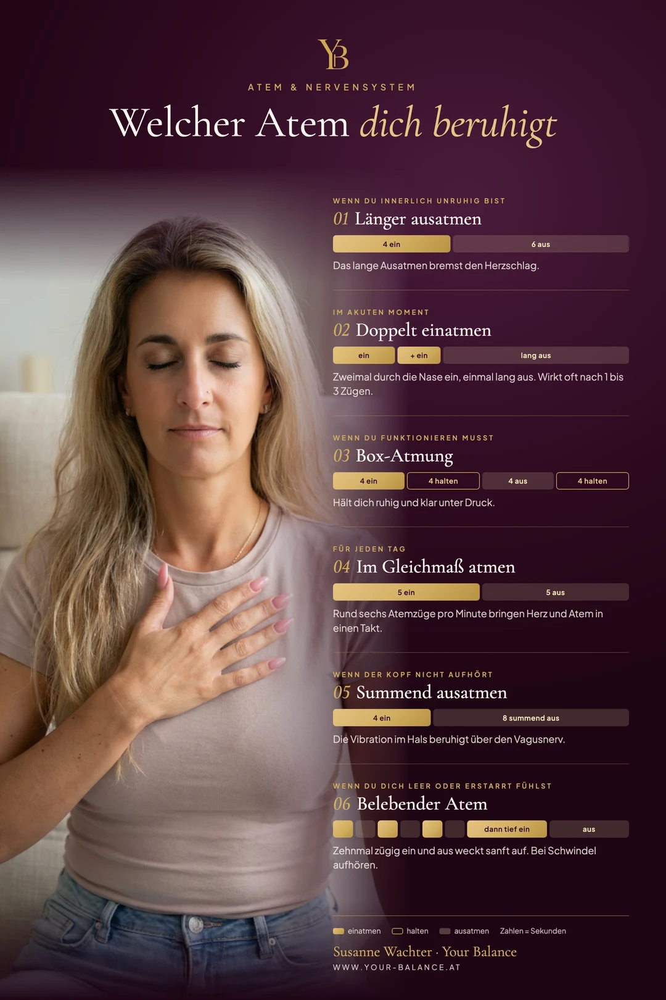

Tief durchatmen. Diesen Rat hast du sicher schon oft gehört. Vielleicht hast du es sogar versucht.
Und es ist nichts passiert. Oder es wurde sogar enger.
Das liegt nicht an dir. Es liegt daran, dass tiefes Einatmen dein System eher anschiebt als beruhigt. Was dein Nervensystem wirklich erreicht, ist das Ausatmen. Und die Frage, welcher Atem zu dem Zustand passt, in dem du gerade bist.
Warum der Atem der schnellste Weg zu deinem Nervensystem ist
Dein Herzschlag, deine Verdauung, deine Anspannung: Das alles läuft automatisch. Du kannst es nicht direkt steuern.
Der Atem ist die eine Ausnahme. Er läuft von allein, und du kannst ihn trotzdem jederzeit lenken. Damit ist er die Tür, durch die du von außen in ein System kommst, das sonst nicht auf dich hört.
Und diese Tür hat zwei Seiten. Beim Einatmen schlägt dein Herz ein wenig schneller, beim Ausatmen ein wenig langsamer. Wer länger aus- als einatmet, drückt deshalb mit jedem Atemzug sanft auf die Bremse. Wer kräftig und zügig atmet, gibt dagegen Gas. Beides ist nützlich. Es kommt darauf an, was du gerade brauchst.

Die 6 Atemtechniken und wann welche hilft
1. Länger ausatmen: wenn du innerlich unruhig bist
Vier Sekunden durch die Nase einatmen, sechs Sekunden durch den leicht geöffneten Mund ausatmen. Das ist die einfachste Technik und für die meisten Momente die richtige. Das lange Ausatmen bremst den Herzschlag, und nach zwei bis drei Minuten wird es ruhiger. Gut bei innerer Unruhe und Herzklopfen.
2. Doppelt einatmen: im akuten Moment
Einmal durch die Nase einatmen, dann noch einmal kurz nachziehen, bis die Lunge ganz voll ist. Danach lang und langsam durch den Mund ausatmen. Dein Körper macht das von selbst, wenn du nach dem Weinen seufzt. Eine Studie der Universität Stanford aus dem Jahr 2023 hat gezeigt, dass fünf Minuten dieser Atmung am Tag die Stimmung stärker verbessern als eine Achtsamkeitsmeditation gleicher Länge. Im akuten Moment reichen oft schon ein bis drei Atemzüge.
3. Box-Atmung: wenn du funktionieren musst
Vier Sekunden ein, vier halten, vier aus, vier halten. Die Box-Atmung beruhigt nicht so tief wie das lange Ausatmen. Dafür hält sie dich wach und klar. Sie passt vor einem schwierigen Gespräch, vor einer Präsentation oder immer dann, wenn du ruhig werden willst, ohne abzuschalten.
4. Im Gleichmaß atmen: für jeden Tag
Fünf Sekunden ein, fünf Sekunden aus, ohne Pause. Das ergibt rund sechs Atemzüge pro Minute, ein Rhythmus, in dem Herz und Atem sich besonders gut aufeinander einstimmen. Diese Übung ist weniger Soforthilfe als Training: Wer sie täglich fünf bis zehn Minuten macht, gibt seinem Nervensystem eine neue Grundlage.
5. Summend ausatmen: wenn der Kopf nicht aufhört
Vier Sekunden ein, dann mit geschlossenen Lippen so lange summend ausatmen, wie es angenehm ist. Die Vibration spürst du im Hals und im Brustkorb. Dort verläuft der Vagusnerv, der für Beruhigung zuständig ist. Summen hat einen zweiten Vorteil: Es ist schwer, gleichzeitig zu summen und zu grübeln. Deshalb hilft es besonders beim Gedankenkarussell und abends im Bett.
6. Belebender Atem: wenn du dich leer oder erstarrt fühlst
Nicht jede Überforderung fühlt sich unruhig an. Manchmal fühlt sie sich taub an, schwer, wie abgeschaltet. Dann braucht dein System nicht noch mehr Bremse, sondern einen sanften Anstoß. Zehnmal zügig durch die Nase ein- und ausatmen, dann einmal tief einatmen und langsam ausatmen. Bei Schwindel sofort aufhören. In der Schwangerschaft oder bei Herzerkrankungen lass diese Übung weg.
Dein Atem ist nicht das Problem. Er ist die Tür, die du jederzeit öffnen kannst.
Warum tief durchatmen oft nicht hilft
Wer gestresst ist, atmet schon schnell und hoch in die Brust. Kommt jetzt ein großer, bewusster Atemzug dazu, bekommt das System noch mehr Luft, aber keine Bremse. Das Ergebnis ist oft ein leichtes Kribbeln oder Schwindel, und das Gefühl, dass Atemübungen bei dir nicht funktionieren.
Der Schlüssel liegt im Ausatmen. Und darin, nicht zu viel zu wollen. Ein ruhiger Atemzug, der ein bisschen länger ausklingt als der davor, bewirkt mehr als drei tiefe. Warum manche Entspannungstechniken grundsätzlich nicht ankommen, erkläre ich im Artikel Warum Entspannungstechniken bei dir nicht wirken.
So findest du deine Technik
In drei Schritten
Spür kurz nach: Bin ich gerade aufgedreht, unter Druck, im Kopf gefangen, oder eher leer und schwer?
Wähle die passende Technik aus der Infografik. Im Zweifel ist es die erste: länger ausatmen.
Übe zwei Minuten und spür danach nach. Nicht die perfekte Technik zählt, sondern dass du sie regelmäßig machst.
Am wirksamsten ist Atemarbeit, bevor es eskaliert. Zwei Minuten am Morgen und zwei am Abend verändern auf Dauer mehr als eine lange Übung im Ausnahmezustand. Wo dein Körper Anspannung festhält, zeigt dir übrigens die Infografik Wo dein Körper Emotionen speichert.
Wenn Atmen allein nicht reicht
Atemübungen ersetzen keine Behandlung. Bei Atemnot, Panikattacken oder Beschwerden, die nicht weggehen, gehört eine ärztliche Abklärung dazu.
Und manchmal reicht der Atem, um den Moment zu tragen, aber nicht, um das Muster zu lösen. Wenn dein System seit Monaten nicht mehr abschaltet, liegt darunter oft etwas, das mehr braucht als eine Übung. Genau dort setze ich im Nervensystem-Reset an.
Wenn dein Körper wieder zur Ruhe finden will
Der Nervensystem-Reset: drei persönliche Sitzungen in vier Wochen, online, damit dein Körper abends wieder abschalten kann.
Mehr erfahrenHäufige Fragen
Welche Atemtechnik beruhigt das Nervensystem am schnellsten?
Im akuten Moment wirkt das doppelte Einatmen mit langem Ausatmen am schnellsten, oft schon nach ein bis drei Atemzügen. Für die meisten Alltagsmomente reicht es, länger aus- als einzuatmen, zum Beispiel vier Sekunden ein und sechs Sekunden aus.
Wie oft sollte ich Atemübungen machen?
Regelmäßig und kurz wirkt besser als selten und lang. Zwei bis fünf Minuten morgens und abends geben deinem Nervensystem eine stabile Grundlage. In akuten Momenten kommt eine Übung einfach dazu.
Warum wird mir bei Atemübungen schwindelig?
Meist wird zu tief oder zu schnell eingeatmet. Atme ruhiger, nicht tiefer, und lass das Ausatmen länger werden als das Einatmen. Wenn der Schwindel bleibt, hör auf und lass es ärztlich abklären.
Du möchtest die Infografik auf deiner Website zeigen? Gern, mit Quellenlink.
Von Herzen, Susanne